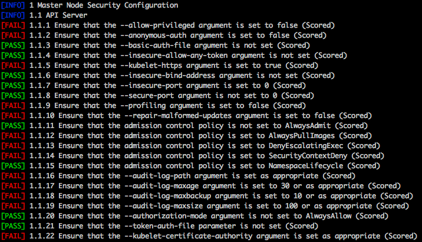

开源工具系列(九) Kube-bench
Kube-Bench⚓︎
项目地址
Github 项目地址：aquasecurity/Kube-Bench
一、Kube-Bench 是什么⚓︎
Kube-Bench 是什么
- 从本质上来说，Kube-Bench 是一个基于Go开发的应用程序，属于 Kubernete 的安全检测的工具。它可以帮助研究人员对部署的 Kubernete 进行安全检测。
- 可通过运行 CIS Kubernetes Benchmark 中记录的检查来检测，检测 Kubernetes 是否根据 CIS Kubernetes 基准中定义的安全最佳实践进行部署。
- 测试规则需要通过 YAML 文件进行配置，因此我们可以轻松更新该工具的测试规则。

二、安装 Kube-Bench⚓︎
运行 Kube-Bench
如果您直接从命令行运行 kube-bench，您可能需要成为 root / sudo 才能访问所有配置文件。
默认情况下，kube-bench 会尝试自动检测 Kubernetes 的运行版本，并将其映射到相应的 CIS Benchmark 版本。例如，Kubernetes 1.15 版本映射到 CIS Benchmark 版本 cis-1.15，这是对 Kubernetes 1.15 有效的基准版本。
kube-bench 还尝试识别节点上运行的组件，并使用它来确定要运行哪些测试（例如，如果节点正在运行 API 服务器，则只运行主节点测试）。
请注意
请注意 ，使用 kube-bench 无法检查托管集群的主节点，例如 GKE、EKS、AKS 和 ACK，因为人们无法访问这些节点，尽管仍然可以使用 kube-bench 检查 worker这些环境中的节点配置。
无法检查托管集群的主节点，例如 GKE、EKS、AKS 和 ACK，使用 kube-bench 作为一个无法访问这些节点，尽管仍然可以使用 kube-bench 检查这些环境中的工作节点配置。
在容器内运行
您可以避免在主机上安装 kube-bench，方法是使用主机 PID 命名空间在容器内运行它，并挂载配置和其他文件位于主机上的 /etc 和 /var 目录，以便 kube-bench 可以检查它们的存在和权限。
docker run --pid=host -v /etc:/etc:ro -v /var:/var:ro -t docker.io/aquasec/kube-bench:latest --version 1.18
注意：测试需要路径中的 kubelet 或 kubectl 二进制文件才能自动检测 Kubernetes 版本。 您可以通过
-v $(which kubectl):/usr/local/mount-from-host/bin/kubectl来解决这个问题。 您还需要传入 kubeconfig 凭据。 例如：
docker run --pid=host -v /etc:/etc:ro -v /var:/var:ro -v $(which kubectl):/usr/local/mount-from-host/bin/kubectl -v ~/.kube:/.kube -e KUBECONFIG=/.kube/config -t docker.io/aquasec/kube-bench:latest
您可以使用自己的配置，方法是将它们安装在 /opt/kube-bench/cfg/ 中的默认配置之上
在 Kubernetes 集群中运行
您可以在 pod 内运行 kube-bench，但它需要访问主机的 PID 命名空间以检查正在运行的进程，以及访问主机上存储配置文件和其他文件的某些目录。
提供的 job.yaml 文件可用于将测试作为作业运行。 例如：
$ kubectl apply -f job.yaml
job.batch/kube-bench created
$ kubectl get pods
NAME READY STATUS RESTARTS AGE
kube-bench-j76s9 0/1 ContainerCreating 0 3s
# Wait for a few seconds for the job to complete
$ kubectl get pods
NAME READY STATUS RESTARTS AGE
kube-bench-j76s9 0/1 Completed 0 11s
# The results are held in the pod's logs
kubectl logs kube-bench-j76s9
[INFO] 1 Master Node Security Configuration
[INFO] 1.1 API Server
...
要在主节点上运行测试，需要在该节点上安排 pod。 这涉及在 pod 规范中设置 nodeSelector 和容忍度。
自 Kubernetes 1.11 以来，应用于主节点的默认标签发生了变化，因此如果您使用的是旧版本，则可能需要修改 nodeSelector 和 tolerations 才能在主节点上运行作业。
在 AKS 群集中运行
-
创建启用RBAC的AKS集群（如1.13.7），否则会出现4次失败
-
使用kubectl-enter 插件 shell 进入节点
kubectl-enter {node-name}或 ssh 到一个代理节点 可以打开 nsg 22 端口并为一个代理节点分配一个公共 ip（仅用于测试目的）
3、运行CIS benchmark查看结果：
kube-bench 不能在 AKS 主节点上运行在 AKS 群集中运行
有一个 job-eks.yaml 文件用于在 EKS 集群上运行 kube-bench 节点检查。 EKS 上的显着差异是无法将作业调度到主节点上，因此无法执行主检查
- 要创建 EKS 集群，请参阅 Amazon EKS 用户指南 中的 Amazon EKS 入门
- 有关配置“eksctl”、“kubectl”和 AWS CLI 的信息在
- 创建一个 Amazon Elastic Container Registry (ECR) 存储库来托管 kube-bench 容器镜像
git clone https://github.com/aquasecurity/kube-bench.git
cd kube-bench
aws ecr get-login-password --region <AWS_REGION> | docker login --username AWS --password-stdin <AWS_ACCT_NUMBER>.dkr.ecr.<AWS_REGION>.amazonaws.com
docker build -t k8s/kube-bench .
docker tag k8s/kube-bench:latest <AWS_ACCT_NUMBER>.dkr.ecr.<AWS_REGION>.amazonaws.com/k8s/kube-bench:latest
docker push <AWS_ACCT_NUMBER>.dkr.ecr.<AWS_REGION>.amazonaws.com/k8s/kube-bench:latest
<AWS_ACCT_NUMBER>.dkr.ecr.<AWS_REGION>.amazonaws.com/k8s/kube-bench:latest
5. 将 job-eks.yaml 中的 image 值替换为第 4 步中的 URI
6. 在集群中的 Pod 上运行 kube-bench 作业：kubectl apply -f job-eks.yaml
7. 找到创建的 Pod，它*应该*在 default 命名空间中：kubectl get pods --all-namespaces
8. 检索此 Pod 的值并输出报告，注意 Pod 名称会有所不同：kubectl logs kube-bench-<value>
- 您可以保存报告供以后参考：kubectl logs kube-bench-<value> > kube-bench-report.txt
在 EKS 集群中运行 DISA STIG
有一个 job-eks-stig.yaml 文件用于在 EKS 集群上运行 kube-bench 节点检查。 EKS 上的显着差异是无法将作业调度到主节点上，因此无法执行主检查
- 要创建 EKS 集群，请参阅 Amazon EKS 用户指南 中的 Amazon EKS 入门
- 有关配置“eksctl”、“kubectl”和 AWS CLI 的信息在
- 创建一个 Amazon Elastic Container Registry (ECR) 存储库来托管 kube-bench 容器镜像
- 下载、构建 kube-bench 容器镜像并将其推送到您的 ECR 存储库
git clone https://github.com/aquasecurity/kube-bench.git cd kube-bench aws ecr get-login-password --region <AWS_REGION> | docker login --username AWS --password-stdin <AWS_ACCT_NUMBER>.dkr.ecr.<AWS_REGION>.amazonaws.com docker build -t k8s/kube-bench . docker tag k8s/kube-bench:latest <AWS_ACCT_NUMBER>.dkr.ecr.<AWS_REGION>.amazonaws.com/k8s/kube-bench:latest docker push <AWS_ACCT_NUMBER>.dkr.ecr.<AWS_REGION>.amazonaws.com/k8s/kube-bench:latest - 复制你推送的镜像的URI，URI格式如下：
<AWS_ACCT_NUMBER>.dkr.ecr.<AWS_REGION>.amazonaws.com/k8s/kube-bench:latest - 将
job-eks-stig.yaml中的image值替换为第 4 步中的 URI - 在集群中的 Pod 上运行 kube-bench 作业：
kubectl apply -f job-eks-stig.yaml - 找到创建的 Pod，它*应该*在
default命名空间中：kubectl get pods --all-namespaces - 检索此 Pod 的值并输出报告，注意 Pod 名称会有所不同：
kubectl logs kube-bench-<value>- 您可以保存报告供以后参考：
kubectl logs kube-bench-<value> > kube-bench-report.txt
- 您可以保存报告供以后参考：
在 OpenShift 上运行
kube-bench 包含一组用于 Red Hat 的 OCP 3.10 和 4.1 的 OpenShift 强化指南的测试文件。 要运行它，您需要指定 --benchmark rh-07 或 --version ocp-3.10 或 --version ocp-4.5 或 --benchmark rh-1.0
kube-bench 支持自动检测，当您运行 kube-bench 命令时，如果在 openshift 环境中运行，它将自动检测。
| OpenShift Hardening Guide | kube-bench config |
|---|---|
| ocp-3.10 + | rh-0.7 |
| ocp-4.1 + | rh-1.0 |
在 GKE 集群中运行
kube-bench 包括 GKE 的基准测试。 要运行它，您需要在运行“kube-bench”命令时指定“--benchmark gke-1.0”或“--benchmark gke-1.2.0”。
要在 GKE 集群中将基准作为作业运行，请应用包含的“job-gke.yaml”。
| CIS Benchmark | Targets |
|---|---|
| gke-1.0 | master, controlplane, node, etcd, policies, managedservices |
| gke-1.2.0 | master, controlplane, node, policies, managedservices |
三、启动 Kube-Bench⚓︎
快速启动 Kube-Bench
有多种运行 Kube-Bench 的方法。您可以在 pod 内运行 Kube-Bench，但它需要访问主机的 PID 命名空间以检查正在运行的进程，以及访问主机上存储配置文件和其他文件的某些目录。
提供的 job.yaml 文件可用于将测试作为作业运行。例如：
$ kubectl apply -f job.yaml
job.batch/Kube-Bench created
$ kubectl get pods
NAME READY STATUS RESTARTS AGE
Kube-Bench-j76s9 0/1 ContainerCreating 0 3s
# Wait for a few seconds for the job to complete
$ kubectl get pods
NAME READY STATUS RESTARTS AGE
Kube-Bench-j76s9 0/1 Completed 0 11s
# The results are held in the pod's logs
kubectl logs Kube-Bench-j76s9
[INFO] 1 Master Node Security Configuration
[INFO] 1.1 API Server
...
有关更多信息和运行 kube-bench 的不同方法，请参阅文档
四、获取 Kube-Bench 结果⚓︎
获取 Kube-Bench 结果前操作
获取 Kube-Bench 结果
检测结果内容示例
[INFO] 1 Master Node Security Configuration
[INFO] 1.1 Master Node Configuration Files
[PASS] 1.1.1 Ensure that the API server pod specification file permissions are set to 644 or more restrictive (Automated)
[PASS] 1.1.2 Ensure that the API server pod specification file ownership is set to root:root (Automated)
[PASS] 1.1.3 Ensure that the controller manager pod specification file permissions are set to 644 or more restrictive (Automated)
[PASS] 1.1.4 Ensure that the controller manager pod specification file ownership is set to root:root (Automated)
[PASS] 1.1.5 Ensure that the scheduler pod specification file permissions are set to 644 or more restrictive (Automated)
[PASS] 1.1.6 Ensure that the scheduler pod specification file ownership is set to root:root (Automated)
[PASS] 1.1.7 Ensure that the etcd pod specification file permissions are set to 644 or more restrictive (Automated)
[PASS] 1.1.8 Ensure that the etcd pod specification file ownership is set to root:root (Automated)
[WARN] 1.1.9 Ensure that the Container Network Interface file permissions are set to 644 or more restrictive (Manual)
[WARN] 1.1.10 Ensure that the Container Network Interface file ownership is set to root:root (Manual)
[FAIL] 1.1.11 Ensure that the etcd data directory permissions are set to 700 or more restrictive (Automated)
[FAIL] 1.1.12 Ensure that the etcd data directory ownership is set to etcd:etcd (Automated)
[PASS] 1.1.13 Ensure that the admin.conf file permissions are set to 644 or more restrictive (Automated)
[PASS] 1.1.14 Ensure that the admin.conf file ownership is set to root:root (Automated)
[PASS] 1.1.15 Ensure that the scheduler.conf file permissions are set to 644 or more restrictive (Automated)
[PASS] 1.1.16 Ensure that the scheduler.conf file ownership is set to root:root (Automated)
[PASS] 1.1.17 Ensure that the controller-manager.conf file permissions are set to 644 or more restrictive (Automated)
[PASS] 1.1.18 Ensure that the controller-manager.conf file ownership is set to root:root (Automated)
[PASS] 1.1.19 Ensure that the Kubernetes PKI directory and file ownership is set to root:root (Automated)
[PASS] 1.1.20 Ensure that the Kubernetes PKI certificate file permissions are set to 644 or more restrictive (Manual)
[PASS] 1.1.21 Ensure that the Kubernetes PKI key file permissions are set to 600 (Manual)
[INFO] 1.2 API Server
[WARN] 1.2.1 Ensure that the --anonymous-auth argument is set to false (Manual)
[PASS] 1.2.2 Ensure that the --token-auth-file parameter is not set (Automated)
[PASS] 1.2.3 Ensure that the --kubelet-https argument is set to true (Automated)
[PASS] 1.2.4 Ensure that the --kubelet-client-certificate and --kubelet-client-key arguments are set as appropriate (Automated)
[FAIL] 1.2.5 Ensure that the --kubelet-certificate-authority argument is set as appropriate (Automated)
[PASS] 1.2.6 Ensure that the --authorization-mode argument is not set to AlwaysAllow (Automated)
[PASS] 1.2.7 Ensure that the --authorization-mode argument includes Node (Automated)
[PASS] 1.2.8 Ensure that the --authorization-mode argument includes RBAC (Automated)
[WARN] 1.2.9 Ensure that the admission control plugin EventRateLimit is set (Manual)
[PASS] 1.2.10 Ensure that the admission control plugin AlwaysAdmit is not set (Automated)
[WARN] 1.2.11 Ensure that the admission control plugin AlwaysPullImages is set (Manual)
[WARN] 1.2.12 Ensure that the admission control plugin SecurityContextDeny is set if PodSecurityPolicy is not used (Manual)
[PASS] 1.2.13 Ensure that the admission control plugin ServiceAccount is set (Automated)
[PASS] 1.2.14 Ensure that the admission control plugin NamespaceLifecycle is set (Automated)
[FAIL] 1.2.15 Ensure that the admission control plugin PodSecurityPolicy is set (Automated)
[PASS] 1.2.16 Ensure that the admission control plugin NodeRestriction is set (Automated)
[PASS] 1.2.17 Ensure that the --insecure-bind-address argument is not set (Automated)
[PASS] 1.2.18 Ensure that the --insecure-port argument is set to 0 (Automated)
[PASS] 1.2.19 Ensure that the --secure-port argument is not set to 0 (Automated)
[FAIL] 1.2.20 Ensure that the --profiling argument is set to false (Automated)
[FAIL] 1.2.21 Ensure that the --audit-log-path argument is set (Automated)
[FAIL] 1.2.22 Ensure that the --audit-log-maxage argument is set to 30 or as appropriate (Automated)
[FAIL] 1.2.23 Ensure that the --audit-log-maxbackup argument is set to 10 or as appropriate (Automated)
[FAIL] 1.2.24 Ensure that the --audit-log-maxsize argument is set to 100 or as appropriate (Automated)
[WARN] 1.2.25 Ensure that the --request-timeout argument is set as appropriate (Manual)
[PASS] 1.2.26 Ensure that the --service-account-lookup argument is set to true (Automated)
[PASS] 1.2.27 Ensure that the --service-account-key-file argument is set as appropriate (Automated)
[PASS] 1.2.28 Ensure that the --etcd-certfile and --etcd-keyfile arguments are set as appropriate (Automated)
[PASS] 1.2.29 Ensure that the --tls-cert-file and --tls-private-key-file arguments are set as appropriate (Automated)
[PASS] 1.2.30 Ensure that the --client-ca-file argument is set as appropriate (Automated)
[PASS] 1.2.31 Ensure that the --etcd-cafile argument is set as appropriate (Automated)
[WARN] 1.2.32 Ensure that the --encryption-provider-config argument is set as appropriate (Manual)
[WARN] 1.2.33 Ensure that encryption providers are appropriately configured (Manual)
[WARN] 1.2.34 Ensure that the API Server only makes use of Strong Cryptographic Ciphers (Manual)
[INFO] 1.3 Controller Manager
[WARN] 1.3.1 Ensure that the --terminated-pod-gc-threshold argument is set as appropriate (Manual)
[FAIL] 1.3.2 Ensure that the --profiling argument is set to false (Automated)
[PASS] 1.3.3 Ensure that the --use-service-account-credentials argument is set to true (Automated)
[PASS] 1.3.4 Ensure that the --service-account-private-key-file argument is set as appropriate (Automated)
[PASS] 1.3.5 Ensure that the --root-ca-file argument is set as appropriate (Automated)
[PASS] 1.3.6 Ensure that the RotateKubeletServerCertificate argument is set to true (Automated)
[PASS] 1.3.7 Ensure that the --bind-address argument is set to 127.0.0.1 (Automated)
[INFO] 1.4 Scheduler
[FAIL] 1.4.1 Ensure that the --profiling argument is set to false (Automated)
[PASS] 1.4.2 Ensure that the --bind-address argument is set to 127.0.0.1 (Automated)
== Remediations master ==
1.1.9 Run the below command (based on the file location on your system) on the master node.
For example,
chmod 644 <path/to/cni/files>
1.1.10 Run the below command (based on the file location on your system) on the master node.
For example,
chown root:root <path/to/cni/files>
1.1.11 On the etcd server node, get the etcd data directory, passed as an argument --data-dir,
from the below command:
ps -ef | grep etcd
Run the below command (based on the etcd data directory found above). For example,
chmod 700 /var/lib/etcd
1.1.12 On the etcd server node, get the etcd data directory, passed as an argument --data-dir,
from the below command:
ps -ef | grep etcd
Run the below command (based on the etcd data directory found above).
For example, chown etcd:etcd /var/lib/etcd
1.2.1 Edit the API server pod specification file /etc/kubernetes/manifests/kube-apiserver.yaml
on the master node and set the below parameter.
--anonymous-auth=false
1.2.5 Follow the Kubernetes documentation and setup the TLS connection between
the apiserver and kubelets. Then, edit the API server pod specification file
/etc/kubernetes/manifests/kube-apiserver.yaml on the master node and set the
--kubelet-certificate-authority parameter to the path to the cert file for the certificate authority.
--kubelet-certificate-authority=<ca-string>
1.2.9 Follow the Kubernetes documentation and set the desired limits in a configuration file.
Then, edit the API server pod specification file /etc/kubernetes/manifests/kube-apiserver.yaml
and set the below parameters.
--enable-admission-plugins=...,EventRateLimit,...
--admission-control-config-file=<path/to/configuration/file>
1.2.11 Edit the API server pod specification file /etc/kubernetes/manifests/kube-apiserver.yaml
on the master node and set the --enable-admission-plugins parameter to include
AlwaysPullImages.
--enable-admission-plugins=...,AlwaysPullImages,...
1.2.12 Edit the API server pod specification file /etc/kubernetes/manifests/kube-apiserver.yaml
on the master node and set the --enable-admission-plugins parameter to include
SecurityContextDeny, unless PodSecurityPolicy is already in place.
--enable-admission-plugins=...,SecurityContextDeny,...
1.2.15 Follow the documentation and create Pod Security Policy objects as per your environment.
Then, edit the API server pod specification file /etc/kubernetes/manifests/kube-apiserver.yaml
on the master node and set the --enable-admission-plugins parameter to a
value that includes PodSecurityPolicy:
--enable-admission-plugins=...,PodSecurityPolicy,...
Then restart the API Server.
1.2.20 Edit the API server pod specification file /etc/kubernetes/manifests/kube-apiserver.yaml
on the master node and set the below parameter.
--profiling=false
1.2.21 Edit the API server pod specification file /etc/kubernetes/manifests/kube-apiserver.yaml
on the master node and set the --audit-log-path parameter to a suitable path and
file where you would like audit logs to be written, for example:
--audit-log-path=/var/log/apiserver/audit.log
1.2.22 Edit the API server pod specification file /etc/kubernetes/manifests/kube-apiserver.yaml
on the master node and set the --audit-log-maxage parameter to 30 or as an appropriate number of days:
--audit-log-maxage=30
1.2.23 Edit the API server pod specification file /etc/kubernetes/manifests/kube-apiserver.yaml
on the master node and set the --audit-log-maxbackup parameter to 10 or to an appropriate
value.
--audit-log-maxbackup=10
1.2.24 Edit the API server pod specification file /etc/kubernetes/manifests/kube-apiserver.yaml
on the master node and set the --audit-log-maxsize parameter to an appropriate size in MB.
For example, to set it as 100 MB:
--audit-log-maxsize=100
1.2.25 Edit the API server pod specification file /etc/kubernetes/manifests/kube-apiserver.yaml
and set the below parameter as appropriate and if needed.
For example,
--request-timeout=300s
1.2.32 Follow the Kubernetes documentation and configure a EncryptionConfig file.
Then, edit the API server pod specification file /etc/kubernetes/manifests/kube-apiserver.yaml
on the master node and set the --encryption-provider-config parameter to the path of that file: --encryption-provider-config=</path/to/EncryptionConfig/File>
1.2.33 Follow the Kubernetes documentation and configure a EncryptionConfig file.
In this file, choose aescbc, kms or secretbox as the encryption provider.
1.2.34 Edit the API server pod specification file /etc/kubernetes/manifests/kube-apiserver.yaml
on the master node and set the below parameter.
--tls-cipher-suites=TLS_ECDHE_ECDSA_WITH_AES_128_GCM_SHA256,TLS_ECDHE_RSA_WITH_AES_128_GCM
_SHA256,TLS_ECDHE_ECDSA_WITH_CHACHA20_POLY1305,TLS_ECDHE_RSA_WITH_AES_256_GCM
_SHA384,TLS_ECDHE_RSA_WITH_CHACHA20_POLY1305,TLS_ECDHE_ECDSA_WITH_AES_256_GCM
_SHA384
1.3.1 Edit the Controller Manager pod specification file /etc/kubernetes/manifests/kube-controller-manager.yaml
on the master node and set the --terminated-pod-gc-threshold to an appropriate threshold,
for example:
--terminated-pod-gc-threshold=10
1.3.2 Edit the Controller Manager pod specification file /etc/kubernetes/manifests/kube-controller-manager.yaml
on the master node and set the below parameter.
--profiling=false
1.4.1 Edit the Scheduler pod specification file /etc/kubernetes/manifests/kube-scheduler.yaml file
on the master node and set the below parameter.
--profiling=false
== Summary master ==
42 checks PASS
11 checks FAIL
11 checks WARN
0 checks INFO
[INFO] 2 Etcd Node Configuration
[INFO] 2 Etcd Node Configuration Files
[PASS] 2.1 Ensure that the --cert-file and --key-file arguments are set as appropriate (Automated)
[PASS] 2.2 Ensure that the --client-cert-auth argument is set to true (Automated)
[PASS] 2.3 Ensure that the --auto-tls argument is not set to true (Automated)
[PASS] 2.4 Ensure that the --peer-cert-file and --peer-key-file arguments are set as appropriate (Automated)
[PASS] 2.5 Ensure that the --peer-client-cert-auth argument is set to true (Automated)
[PASS] 2.6 Ensure that the --peer-auto-tls argument is not set to true (Automated)
[PASS] 2.7 Ensure that a unique Certificate Authority is used for etcd (Manual)
== Summary etcd ==
7 checks PASS
0 checks FAIL
0 checks WARN
0 checks INFO
[INFO] 3 Control Plane Configuration
[INFO] 3.1 Authentication and Authorization
[WARN] 3.1.1 Client certificate authentication should not be used for users (Manual)
[INFO] 3.2 Logging
[WARN] 3.2.1 Ensure that a minimal audit policy is created (Manual)
[WARN] 3.2.2 Ensure that the audit policy covers key security concerns (Manual)
== Remediations controlplane ==
3.1.1 Alternative mechanisms provided by Kubernetes such as the use of OIDC should be
implemented in place of client certificates.
3.2.1 Create an audit policy file for your cluster.
3.2.2 Consider modification of the audit policy in use on the cluster to include these items, at a
minimum.
== Summary controlplane ==
0 checks PASS
0 checks FAIL
3 checks WARN
0 checks INFO
[INFO] 4 Worker Node Security Configuration
[INFO] 4.1 Worker Node Configuration Files
[PASS] 4.1.1 Ensure that the kubelet service file permissions are set to 644 or more restrictive (Automated)
[PASS] 4.1.2 Ensure that the kubelet service file ownership is set to root:root (Automated)
[PASS] 4.1.3 If proxy kubeconfig file exists ensure permissions are set to 644 or more restrictive (Manual)
[PASS] 4.1.4 If proxy kubeconfig file exists ensure ownership is set to root:root (Manual)
[PASS] 4.1.5 Ensure that the --kubeconfig kubelet.conf file permissions are set to 644 or more restrictive (Automated)
[PASS] 4.1.6 Ensure that the --kubeconfig kubelet.conf file ownership is set to root:root (Automated)
[PASS] 4.1.7 Ensure that the certificate authorities file permissions are set to 644 or more restrictive (Manual)
[PASS] 4.1.8 Ensure that the client certificate authorities file ownership is set to root:root (Manual)
[PASS] 4.1.9 Ensure that the kubelet --config configuration file has permissions set to 644 or more restrictive (Automated)
[PASS] 4.1.10 Ensure that the kubelet --config configuration file ownership is set to root:root (Automated)
[INFO] 4.2 Kubelet
[PASS] 4.2.1 Ensure that the anonymous-auth argument is set to false (Automated)
[PASS] 4.2.2 Ensure that the --authorization-mode argument is not set to AlwaysAllow (Automated)
[PASS] 4.2.3 Ensure that the --client-ca-file argument is set as appropriate (Automated)
[PASS] 4.2.4 Ensure that the --read-only-port argument is set to 0 (Manual)
[PASS] 4.2.5 Ensure that the --streaming-connection-idle-timeout argument is not set to 0 (Manual)
[FAIL] 4.2.6 Ensure that the --protect-kernel-defaults argument is set to true (Automated)
[PASS] 4.2.7 Ensure that the --make-iptables-util-chains argument is set to true (Automated)
[PASS] 4.2.8 Ensure that the --hostname-override argument is not set (Manual)
[WARN] 4.2.9 Ensure that the --event-qps argument is set to 0 or a level which ensures appropriate event capture (Manual)
[WARN] 4.2.10 Ensure that the --tls-cert-file and --tls-private-key-file arguments are set as appropriate (Manual)
[PASS] 4.2.11 Ensure that the --rotate-certificates argument is not set to false (Automated)
[PASS] 4.2.12 Verify that the RotateKubeletServerCertificate argument is set to true (Manual)
[WARN] 4.2.13 Ensure that the Kubelet only makes use of Strong Cryptographic Ciphers (Manual)
== Remediations node ==
4.2.6 If using a Kubelet config file, edit the file to set protectKernelDefaults: true.
If using command line arguments, edit the kubelet service file
/etc/systemd/system/kubelet.service.d/10-kubeadm.conf on each worker node and
set the below parameter in KUBELET_SYSTEM_PODS_ARGS variable.
--protect-kernel-defaults=true
Based on your system, restart the kubelet service. For example:
systemctl daemon-reload
systemctl restart kubelet.service
4.2.9 If using a Kubelet config file, edit the file to set eventRecordQPS: to an appropriate level.
If using command line arguments, edit the kubelet service file
/etc/systemd/system/kubelet.service.d/10-kubeadm.conf on each worker node and
set the below parameter in KUBELET_SYSTEM_PODS_ARGS variable.
Based on your system, restart the kubelet service. For example:
systemctl daemon-reload
systemctl restart kubelet.service
4.2.10 If using a Kubelet config file, edit the file to set tlsCertFile to the location
of the certificate file to use to identify this Kubelet, and tlsPrivateKeyFile
to the location of the corresponding private key file.
If using command line arguments, edit the kubelet service file
/etc/systemd/system/kubelet.service.d/10-kubeadm.conf on each worker node and
set the below parameters in KUBELET_CERTIFICATE_ARGS variable.
--tls-cert-file=<path/to/tls-certificate-file>
--tls-private-key-file=<path/to/tls-key-file>
Based on your system, restart the kubelet service. For example:
systemctl daemon-reload
systemctl restart kubelet.service
4.2.13 If using a Kubelet config file, edit the file to set TLSCipherSuites: to
TLS_ECDHE_ECDSA_WITH_AES_128_GCM_SHA256,TLS_ECDHE_RSA_WITH_AES_128_GCM_SHA256,TLS_ECDHE_ECDSA_WITH_CHACHA20_POLY1305,TLS_ECDHE_RSA_WITH_AES_256_GCM_SHA384,TLS_ECDHE_RSA_WITH_CHACHA20_POLY1305,TLS_ECDHE_ECDSA_WITH_AES_256_GCM_SHA384,TLS_RSA_WITH_AES_256_GCM_SHA384,TLS_RSA_WITH_AES_128_GCM_SHA256
or to a subset of these values.
If using executable arguments, edit the kubelet service file
/etc/systemd/system/kubelet.service.d/10-kubeadm.conf on each worker node and
set the --tls-cipher-suites parameter as follows, or to a subset of these values.
--tls-cipher-suites=TLS_ECDHE_ECDSA_WITH_AES_128_GCM_SHA256,TLS_ECDHE_RSA_WITH_AES_128_GCM_SHA256,TLS_ECDHE_ECDSA_WITH_CHACHA20_POLY1305,TLS_ECDHE_RSA_WITH_AES_256_GCM_SHA384,TLS_ECDHE_RSA_WITH_CHACHA20_POLY1305,TLS_ECDHE_ECDSA_WITH_AES_256_GCM_SHA384,TLS_RSA_WITH_AES_256_GCM_SHA384,TLS_RSA_WITH_AES_128_GCM_SHA256
Based on your system, restart the kubelet service. For example:
systemctl daemon-reload
systemctl restart kubelet.service
== Summary node ==
19 checks PASS
1 checks FAIL
3 checks WARN
0 checks INFO
[INFO] 5 Kubernetes Policies
[INFO] 5.1 RBAC and Service Accounts
[WARN] 5.1.1 Ensure that the cluster-admin role is only used where required (Manual)
[WARN] 5.1.2 Minimize access to secrets (Manual)
[WARN] 5.1.3 Minimize wildcard use in Roles and ClusterRoles (Manual)
[WARN] 5.1.4 Minimize access to create pods (Manual)
[WARN] 5.1.5 Ensure that default service accounts are not actively used. (Manual)
[WARN] 5.1.6 Ensure that Service Account Tokens are only mounted where necessary (Manual)
[WARN] 5.1.7 Avoid use of system:masters group (Manual)
[WARN] 5.1.8 Limit use of the Bind, Impersonate and Escalate permissions in the Kubernetes cluster (Manual)
[INFO] 5.2 Pod Security Policies
[WARN] 5.2.1 Minimize the admission of privileged containers (Automated)
[WARN] 5.2.2 Minimize the admission of containers wishing to share the host process ID namespace (Automated)
[WARN] 5.2.3 Minimize the admission of containers wishing to share the host IPC namespace (Automated)
[WARN] 5.2.4 Minimize the admission of containers wishing to share the host network namespace (Automated)
[WARN] 5.2.5 Minimize the admission of containers with allowPrivilegeEscalation (Automated)
[WARN] 5.2.6 Minimize the admission of root containers (Automated)
[WARN] 5.2.7 Minimize the admission of containers with the NET_RAW capability (Automated)
[WARN] 5.2.8 Minimize the admission of containers with added capabilities (Automated)
[WARN] 5.2.9 Minimize the admission of containers with capabilities assigned (Manual)
[INFO] 5.3 Network Policies and CNI
[WARN] 5.3.1 Ensure that the CNI in use supports Network Policies (Manual)
[WARN] 5.3.2 Ensure that all Namespaces have Network Policies defined (Manual)
[INFO] 5.4 Secrets Management
[WARN] 5.4.1 Prefer using secrets as files over secrets as environment variables (Manual)
[WARN] 5.4.2 Consider external secret storage (Manual)
[INFO] 5.5 Extensible Admission Control
[WARN] 5.5.1 Configure Image Provenance using ImagePolicyWebhook admission controller (Manual)
[INFO] 5.7 General Policies
[WARN] 5.7.1 Create administrative boundaries between resources using namespaces (Manual)
[WARN] 5.7.2 Ensure that the seccomp profile is set to docker/default in your pod definitions (Manual)
[WARN] 5.7.3 Apply Security Context to Your Pods and Containers (Manual)
[WARN] 5.7.4 The default namespace should not be used (Manual)
== Remediations policies ==
5.1.1 Identify all clusterrolebindings to the cluster-admin role. Check if they are used and
if they need this role or if they could use a role with fewer privileges.
Where possible, first bind users to a lower privileged role and then remove the
clusterrolebinding to the cluster-admin role :
kubectl delete clusterrolebinding [name]
5.1.2 Where possible, remove get, list and watch access to secret objects in the cluster.
5.1.3 Where possible replace any use of wildcards in clusterroles and roles with specific
objects or actions.
5.1.4 Where possible, remove create access to pod objects in the cluster.
5.1.5 Create explicit service accounts wherever a Kubernetes workload requires specific access
to the Kubernetes API server.
Modify the configuration of each default service account to include this value
automountServiceAccountToken: false
5.1.6 Modify the definition of pods and service accounts which do not need to mount service
account tokens to disable it.
5.1.7 Remove the system:masters group from all users in the cluster.
5.1.8 Where possible, remove the impersonate, bind and escalate rights from subjects.
5.2.1 Create a PSP as described in the Kubernetes documentation, ensuring that
the .spec.privileged field is omitted or set to false.
5.2.2 Create a PSP as described in the Kubernetes documentation, ensuring that the
.spec.hostPID field is omitted or set to false.
5.2.3 Create a PSP as described in the Kubernetes documentation, ensuring that the
.spec.hostIPC field is omitted or set to false.
5.2.4 Create a PSP as described in the Kubernetes documentation, ensuring that the
.spec.hostNetwork field is omitted or set to false.
5.2.5 Create a PSP as described in the Kubernetes documentation, ensuring that the
.spec.allowPrivilegeEscalation field is omitted or set to false.
5.2.6 Create a PSP as described in the Kubernetes documentation, ensuring that the
.spec.runAsUser.rule is set to either MustRunAsNonRoot or MustRunAs with the range of
UIDs not including 0.
5.2.7 Create a PSP as described in the Kubernetes documentation, ensuring that the
.spec.requiredDropCapabilities is set to include either NET_RAW or ALL.
5.2.8 Ensure that allowedCapabilities is not present in PSPs for the cluster unless
it is set to an empty array.
5.2.9 Review the use of capabilites in applications running on your cluster. Where a namespace
contains applicaions which do not require any Linux capabities to operate consider adding
a PSP which forbids the admission of containers which do not drop all capabilities.
5.3.1 If the CNI plugin in use does not support network policies, consideration should be given to
making use of a different plugin, or finding an alternate mechanism for restricting traffic
in the Kubernetes cluster.
5.3.2 Follow the documentation and create NetworkPolicy objects as you need them.
5.4.1 if possible, rewrite application code to read secrets from mounted secret files, rather than
from environment variables.
5.4.2 Refer to the secrets management options offered by your cloud provider or a third-party
secrets management solution.
5.5.1 Follow the Kubernetes documentation and setup image provenance.
5.7.1 Follow the documentation and create namespaces for objects in your deployment as you need
them.
5.7.2 Use security context to enable the docker/default seccomp profile in your pod definitions.
An example is as below:
securityContext:
seccompProfile:
type: RuntimeDefault
5.7.3 Follow the Kubernetes documentation and apply security contexts to your pods. For a
suggested list of security contexts, you may refer to the CIS Security Benchmark for Docker
Containers.
5.7.4 Ensure that namespaces are created to allow for appropriate segregation of Kubernetes
resources and that all new resources are created in a specific namespace.
== Summary policies ==
0 checks PASS
0 checks FAIL
26 checks WARN
0 checks INFO
== Summary total ==
68 checks PASS
12 checks FAIL
43 checks WARN
0 checks INFO
五、注意事项⚓︎
注意事项是什么
-
Kube-Bench 尽可能接近地实现 CIS Kubernetes Benchmark 。如果 Kube-Bench 没有按照 Benchmark 中的描述正确执行安全测试，请在这里提出问题。要报告基准本身的问题（例如，您认为不合适的测试），请加入 CIS 社区。
-
Kubernetes 版本和 CIS 基准测试版本之间没有一对一的映射。请参阅 CIS Kubernetes 基准支持，了解不同版本的基准涵盖了哪些 Kubernetes 版本。
-
Kube-Bench 无法检查受管集群的主节点，例如 GKE、EKS 和 AKS，因为 Kube-Bench 不能访问这些节点。不过，Kube-Bench 在这些环境中仍然可以检查 worker 节点配置。
-
默认情况下，Kube-Bench 会根据机器上运行的 Kubernetes 版本来确定要运行的测试集。
有关更多详细信息，请参阅以下有关运行 Kube-Bench 的文档。